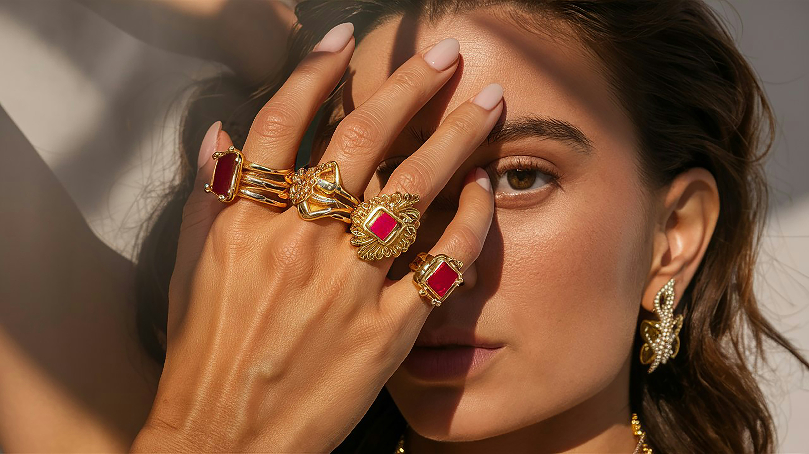

How a single sketch became a timeless legacy.

Maison de Rawan was born from a quiet rebellion against the fast-paced, soulless production of modern jewelry. Our founder, Rawan, envisioned a house where time stands still—where every piece is not just manufactured, but "composed" like a piece of poetry, honoring the raw beauty of gold and the depth of ancestral motifs.

Our journey took us to the hearts of ancient workshops, where the scent of melting gold and the rhythmic sound of hammers define the day. We embraced the "Alchemist's Path"—refining raw materials through ancestral hand-etching and manual forging. This intentional imperfection is our hallmark; it’s the soul that machines can never replicate.

Today, Maison de Rawan stands as a bridge between yesterday’s craftsmanship and tomorrow’s elegance. Our jewelry doesn't just decorate; it empowers. When you wear our gold, you are carrying a piece of a story—a deliberate celebration of heritage, curated for the modern connoisseur of luxury.